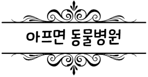

어느덧 우리 로이가 거의 만 9살로 벌써 아저씨에 가까운 나이가 되었다. 마음은 아직도 아기 같은데 말이다.
몇 달 전 처음으로 로이의 건강검진을 진행했는데, 안타깝게도 심장병 B2 단계(초기)라는 진단을 받았다. 그래서 지금은 매달 한 달 치씩 심장약을 사서 열심히 먹이고 있다. (그게 한 달에만 20만 원이라는 사실....ㄷㄷ)
여기에 추가로 슬개골 탈구 3기 진단도 같이 받았다. 하지만 나이가 좀 있고 심장병도 앓고 있다 보니, 무리하게 수술을 시키기보다는 일상에서 무리하지 않게 지켜보는 게 맞다고 판단했다. 다행히 아직은 걷는 데 전혀 문제가 없어서, 병원에서 권해주신 대로 슬개골 영양제를 챙겨 먹이고 있다.
"항상 우리 아들 건강하다고만 믿고 지내왔는데, 건강검진을 통해 갑작스럽게 심장병을 발견하게 되어서 너무 놀라고 가슴이 아팠다. 혹시 내가 평소에 뭘 잘못해줘서 애가 심장병에 걸린 건 아닐까 하는 생각에 한동안 자책도 많이 했다. 하지만 슬퍼만 하고 있을 수는 없다! 앞으로 돈 더 열심히 많이 벌어서, 우리 로이에게 해줄 수 있는 건 아낌없이 다 해주고 싶다. 로이야, 아프지 말고 누나랑 오래오래 행복하자! ❤️"
📌 Roy's Care List
- ✔ 하루도 빠짐없이 매일매일 심장약 챙겨 먹이기
- ✔ 다리에 무리가 가지 않도록 슬개골 영양제 급여하기
- ✔ 돈 열심히 벌어서 로이가 필요한 것은 무엇이든 다 해주기!